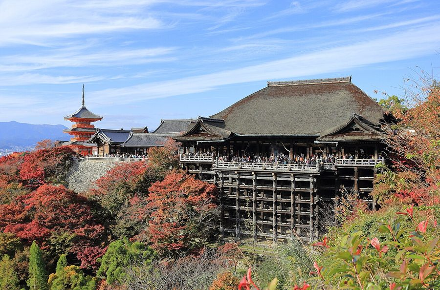
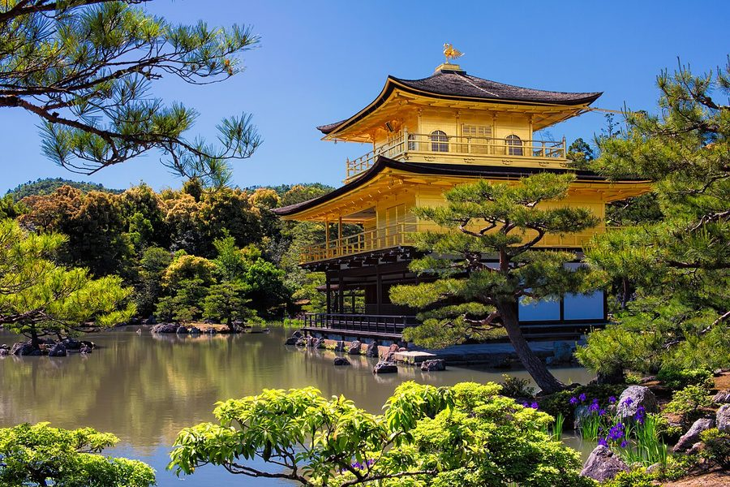
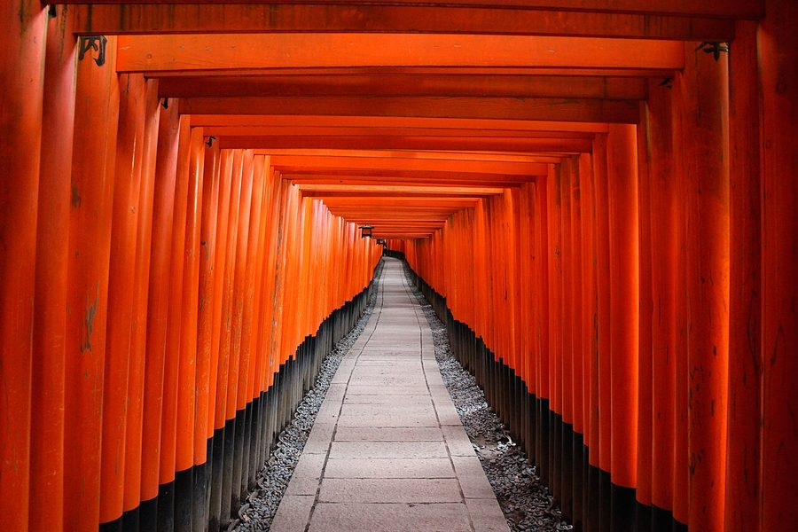
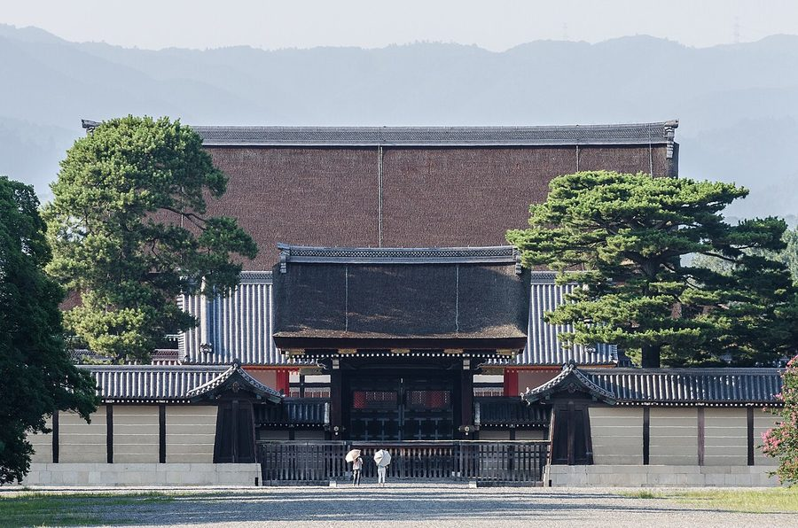

京都府京都市の日帰り温泉・銭湯・サウナ（121件）
寄り道スポット検索アプリ「ヨッテコ」の収録データから、京都府京都市の日帰り温泉・銭湯・サウナを営業時間・料金つきで一覧にしました（2026年8月時点）。
最も安いのは北白川天然ラジウム温泉 えいせん京（150円）。最も遅くまで入れるのはMOKU SAUNA（翌7:00まで）。朝風呂ならやしろ湯（6:00開店）。
京都府京都市はどんなまち？
数字で見る🔍京都府京都市
1,369,750人
人口（住民基本台帳・2026年1月1日）
827.83km²
面積
16.2℃
年平均気温（1991-2020年平年値）
まちの横顔




- 地形と気候: 京都盆地の北東部と周辺の山地を市域とし、淀川河口までおよそ50kmの準内陸的な都市です。これは日本の大都市の中では珍しいとされています。1991年から2020年までの年平均気温は16.2℃、年平均合計降水量は1,522.9mmで、7月の梅雨や9月の秋霖・台風の時期に降水量のピークが達します。気温は上昇の傾向にあり、2025年の夏は猛暑日と熱帯夜の両方が60日を記録しました。
- 観光: 794年の平安遷都から明治初期の東京奠都までの約1080年にわたって日本の首都であり続けたことから、「千年の都」「古都・京都」とも呼ばれます。第二次世界大戦の戦災被害を免れた神社仏閣や古い史跡、町並みが数多く残り、国内外の観光客が訪れる観光都市として国際観光文化都市に指定されています。旧市街地では建物の高さ規制や広告表示の制限がなされ、一部の地域で古い街並みが保全されています。
- 特産と文化: 江戸時代には国内流通が活発化し、全国に製品を出荷する工業都市となる一方、数々の技術者を各地の藩の要請に従って派遣しました。その伝統は現在も伝統工芸として残っているほか、京セラや島津製作所、オムロン、ニデックなど先端技術を持つ企業、任天堂やワコールなど業界トップクラスの本社が集まっています。
寄り道充実度（全国偏差値）
偏差値・順位は、ヨッテコ収録データ（2026年8月時点・26,033件）を市区町村別に集計した施設数の全国分布（1,728市区町村）から毎回算出しています。カードを押すとカテゴリ別の分析に切り替わります。
日帰り温泉から見た京都府京都市
市内に日帰り温泉121件、全国3位でトップ10入り。——全国トップ10に入る、湯の多さ。
121件
日帰り入浴施設（全国3位・上位0.2%）
138偏差値
温泉充実度
550円
入浴料の中央値（判明103件・全国650円）
- 露天風呂を備える店は26%。全国水準の46%より少なめです。京都盆地の北東部と周辺の山地を市域とし、淀川河口までおよそ50キロの準内陸に位置する市。湯を楽しむ舞台は、屋外ではなく屋内に寄っています。
- 天然温泉の店は11%。全国水準（67%）より少なめの構成です。平安遷都から東京奠都まで約1080年にわたり日本の首都だった「千年の都」で、国際観光文化都市に指定される市。湧いている湯よりも、通いやすさで選ばれる施設が多いということになります。
- サウナがある店は88%、全国水準（52%）の1.7倍。年平均気温16.2℃、2025年夏は猛暑日と熱帯夜の両方が60日を記録した盆地の市。日常づかいのスーパー銭湯型が数を押し上げる構成です。
- 88%の店が21時を過ぎても開いています。全国水準は40%です。移動が遅くなった日でも、間に合う湯が見つかりそうです。
- 入浴料（判明103件）の中央値は550円。全国（650円）より15%安めです。気軽に立ち寄れる金額に収まっています。
出典: 施設データ=ヨッテコ収録データ（26,033件・2026年8月時点）。偏差値・全国順位・全国水準は全1,728市区町村の分布から毎回算出。 / 人口=総務省「住民基本台帳に基づく人口、人口動態及び世帯数」（2026年1月1日現在） / 面積=国土地理院「全国都道府県市区町村別面積調」（2026年4月1日時点） / 年平均気温=日本語版Wikipedia「京都市」（https://ja.wikipedia.org/wiki/京都市、2026年8月21日取得） / まちの解説=同記事より作成（CC BY-SA 4.0） / 写真=Wikimedia Commons（各キャプションに作者・ライセンスを記載）
曜日別の営業施設数
| 月 | 火 | 水 | 木 | 金 | 土 | 日 |
|---|---|---|---|---|---|---|
| 105 | 106 | 109 | 111 | 108 | 117 | 111 |
月曜日が最も休みが多く（各16件が定休）、年中無休は51件です。※営業時間データのある121件で集計
入浴料金の分布（大人）
| 500円以下 | 3件 | |
| 501〜800円 | 80件 | |
| 801〜1,200円 | 8件 | |
| 1,201円以上 | 12件 |
料金が確認できた103件で集計。
施設一覧
| 施設 | 営業時間 | 料金（大人） |
|---|---|---|
| ANAクラウンプラザホテル京都 サンテロワ サウナ ANAクラウンプラザホテル京都内のプール・サウナ施設サンテロワ。京都の良質な地下水を使用。2026年3月末で閉館。 | 21:40〜24:00 | — |
| EARTH SAUNA サウナ | 10:00〜15:00 | — |
| FIRST THE SAUNA 京都 サウナ 京都駅近くの上質な会員制プライベートサウナ。サウナ・温浴風呂・水風呂・ととのいスペースを備え、セルフロウリュやアロマ熱波… | 09:30〜24:00 | 1,800円 |
| MACHIYA:SAUNA KYOTO 町家サウナ京都 サウナ 京都中京区の160年の京町家を改装した一棟貸切プライベートサウナ。文豪が訪れたアトリエをサウナに。宿泊も可能。 | 09:00〜22:30 | — |
| MOKU SAUNA サウナ 京都・四条烏丸の屋上に佇むプライベートサウナ。木の香りあふれるサウナルームとプール、外気浴デッキを完備。都心でありながら… | 09:00〜31:00 | — |
| ROKKAKU SPA SAUNA 六角スパサウナ サウナ 京都中京区の京町家に設置された隠れ家プライベートサウナ。岩盤浴・茶室サウナ・醒ヶ井の地下水を使用した水風呂を備え、吹き抜… | 09:30〜20:50 | 2,500円 |
| Sakura Sauna & Spa Kyoto SASAUNA サウナ 京都の清水五条に位置する、檜の素材を活かしたデザインサウナ。超高温サウナと超低温の清水風呂、京町家の坪庭をコンセプトとし… | 08:00〜10:00 ※曜日により異なる | 1,500円 |
| TANAKA.SAUNA サウナ | 10:00〜20:15 | 5,000円 |
| ZAC山荘 サウナ 京都市左京区の住宅街からわずか5分の隠れ家的貸山荘。新設のサウナを備え、自然に囲まれた空間で整えるプライベートな体験が可… | 10:00〜17:00 | — |
| moksa 蒸庵 サウナ 八瀬の歴史的な窯風呂文化を現代に伝えるモクサホテルのプライベートサウナ。3種類の完全予約制サウナ（炭蒸・檜蒸・美蒸）を用… | 07:00〜26:00 | — |
| sayoka サウナ 京都上京区のプライベートサウナ。水着着用で男女共用可能。ととのいスペースと外気浴スペースを備え、時間を贅沢に使って無にな… | 10:00〜21:20 ※曜日により異なる | — |
| ぎょうざ湯2 サウナ 京都中京区の屋上に位置するプライベートサウナ。フィンランド式のサウナで本格的なロウリュが可能。雨の日も晴れの日も青空を感… | 10:00〜23:20 | — |
| くらま温泉 天然温泉露天風呂サウナ 京都の鞍馬地区にある温泉施設。複数の日帰り入浴プランと、硫黄泉の湯が特徴です。 | 10:00〜21:00 | 1,500円 |
| さがの温泉 天山の湯 天然温泉露天風呂サウナ Premium hot spring facility in the bamboo groves of Sagano, … | 10:00〜24:00 | 1,200円 |
| しののめ湯 サウナ 左京区里の前にある銭湯。地下70メートルから汲み上げた天然地下水を使用。軟水で敏感肌や乾燥肌の方にも優しい入浴が可能。 | 15:00〜24:00（火休） | 550円 |
| むらさき湯 露天風呂サウナ | 15:00〜25:00（月休） | 550円 |
| やしろ湯 サウナ 太秦天神川駅から徒歩3分。肌に優しい軟水と炭酸温泉、遠赤外線サウナが特徴。 | 15:00〜24:00 ※曜日により異なる | 550円 |
| ゆとなみ社 サウナの梅湯 サウナ 京都市下京区五条、JR京都駅から徒歩約15分。2015年に継業したゆとなみ社銭湯の1号店。初心者向けに配慮した環境で、レ… | 06:00〜26:00（木休） | 550円 |
| ゆとなみ社 源湯 サウナ | 14:00〜25:00（火休） | 550円 |
| ゆとなみ社 鴨川湯 サウナ 2023年夏に継業したゆとなみ社銭湯の8号店。カラフルなタイルが特徴で、薪沸かしの天然地下水を使用。 | 14:00〜25:00 ※曜日により異なる | 550円 |
| アパホテル 〈京都駅堀川通〉 天然温泉露天風呂サウナ | 09:00〜18:00 | — |
| アーバンホテル 京都四条プレミアム サウナ 京都四条にあるアーバンホテル。大浴場・サウナ・フィットネス完備。日帰り利用で大浴場が無料で使用可能 | 15:00〜24:00 | — |
| トロン温泉稲荷 サウナ 明治43年「稲荷湯」として創業した100年以上の歴史を持つ銭湯。日本唯一のトロン温泉（人工温泉）を導入。 | 16:00〜23:00（金休） | 550円 |
| プライベートサウナ kasika 京都北山 サウナ 京都北山に誕生した完全貸切プライベートサウナ。光学式心拍センサーで「ととのい」を可視化し、医療法人監修のもと安全で極上の… | 10:00〜25:00 | — |
| プライベートサウナ 京都 高瀬川 サウナ 高瀬川の絶景を眺める完全貸切のプライベートサウナ。フィンランド式サウナでセルフロウリュが可能。京都観光後のリフレッシュに… | 09:00〜18:00 | — |
| ベッセルホテル カンパーナ京都五条 サウナ ベッセルホテルカンパーナ京都五条の大浴場。広い空間で旅の疲れを癒すサウナ併設施設。ReFaシャワーヘッド採用。 | 15:00〜22:00 | — |
| ホテル空京都 HOTEL KUU KYOTO 露天風呂サウナ 京都駅から徒歩約7分。地下60m汲み上げた天然地下水を使用。富士山溶岩盤の露天風呂と檜風呂で、身体の芯から癒される。 | 15:00〜21:30 | 1,200円 |
| ルーマプラザ京都祇園 露天風呂サウナ 京都祇園の男性専用サウナ・カプセルホテル複合施設。屋上からの絶景を眺めながら露天浴や外気浴を楽しめる。 | 00:00〜24:00 | 2,700円 |
| ロイヤルツインホテル 京都八条口 露天風呂サウナ JR京都駅八条口徒歩2分のホテル。大浴場に内湯・露天風呂・サウナ・水風呂を完備。男性浴場と女性浴場で異なる設備構成 | 15:00〜24:00 ※曜日により異なる | — |
| 上野湯 サウナ | 15:30〜24:00（火休） | 550円 |
| 五色湯 サウナ | 15:00〜23:00（月休） | 550円 |
| 五香湯 露天風呂サウナ 京都の銭湯でありながらスーパー銭湯を超える設備を備えた施設。特にバドガシュタインラジウム鉱石を使った岩盤浴とラドン222… | 14:30〜24:30 | 550円 |
| 京乃湯 サウナ 地下から湧く天然水を使用した銭湯。シャンプー・リンス完備で手ぶら利用が可能。本格的なヒノキサウナを完備。 | 15:00〜24:00 ※曜日により異なる | 550円 |
| 京極湯 露天風呂サウナ 京極湯へようこそ。京都市右京区西京極の銭湯。 | 15:00〜23:00（月休） | 550円 |
| 京都 嵐山温泉 湯浴み処 風風の湯 天然温泉露天風呂サウナ Hotel hot spring facility in Arashiyama, Kyoto with outdoor … | 12:00〜22:00 | 1,100円 |
| 京都 竹の郷温泉 万葉の湯 天然温泉露天風呂サウナ 竹の郷温泉の2種類の源泉を使用した美肌の湯。9つの浴槽でさまざまな温泉体験ができる。 | 00:00〜24:00 | 2,730円 |
| 京都北白川 不動温泉 天然温泉 Historic radium spring facility in Kyoto known as a healing … | 10:00〜18:00（木休） | 1,500円 |
| 京都市立 三条浴場 サウナ | 16:00〜22:00（日休） | 550円 |
| 京都市立 久世浴場 サウナ | 16:30〜22:30（日休） | 550円 |
| 京都市立 壬生浴場 | 16:00〜22:00（日休） | 550円 |
| 京都市立 改進浴場 サウナ 地域に密着した衛生浴場。ホテルのような外観で、中庭が見える浴室を完備。 | 16:00〜22:00（月休） | 550円 |
| 京都市立 辰巳浴場 伏見区醍醐の住宅街にあるレトロな銭湯。広くて綺麗な昭和レトロの浴場。 | 16:30〜22:30（日休） | 550円 |
| 京都市立 錦林浴場 サウナ 京都市立浴場。公立銭湯。 | 16:30〜22:30（日休） | 550円 |
| 京都市立 養正浴場 | 16:00〜22:00（日休） | 550円 |
| 京都桂温泉 仁左衛門の湯 天然温泉露天風呂サウナ Historic Katsura hot spring in Kyoto offering dual-source na… | 10:00〜25:00 ※曜日により異なる | 800円 |
| 伏見 力の湯 天然温泉露天風呂サウナ Super-bath facility in Fushimi, Kyoto featuring natural hot … | 10:00〜23:00 ※曜日により異なる | 850円 |
| 伏見温泉 サウナ | 15:30〜23:40（月休） | 400円 |
| 個室サウナ&スパ サウジム洛西店 サウナ | 09:00〜24:00（木休） | 2,200円 |
| 初音湯 サウナ 京都市中京区の銭湯。市街地にあり、多様な入浴体験が楽しめる施設です。 | 15:00〜24:00 | 510円 |
| 加茂湯 サウナ | 15:00〜26:00 ※曜日により異なる | 550円 |
| 北白川天然ラジウム温泉 えいせん京 天然温泉露天風呂 京都市北白川地区にある天然ラジウム温泉。会員・一般で異なる営業時間を設定し、ラジウム泉を利用できます。 | 11:00〜17:45（火休） | 150円 |
| 名倉湯 サウナ | 14:00〜24:00（火休） | 510円 |
| 四季倶楽部 京都加茂川荘 | 16:00〜23:00 | — |
| 壬生温泉 はなの湯 天然温泉露天風呂サウナ Natural hot spring facility in Kyoto Minami Ward featuring n… | 10:00〜25:00 | 840円 |
| 壬生湯 サウナ 新選組ゆかりの壬生寺近くにある、昭和11年から営業する銭湯。電気風呂のマッサージ機が特徴。 | 15:00〜23:00（月休） | 510円 |
| 大原山荘 天然温泉露天風呂 | 09:00〜18:00 | 3,900円 |
| 大原温泉湯元 京の民宿 大原の里 天然温泉露天風呂 | 09:00〜18:00 | 4,200円 |
| 大宮温泉 サウナ | 16:00〜23:00（木休） | 510円 |
| 大徳寺温泉 サウナ | 14:00〜25:00（金休） | 550円 |
| 大正湯 サウナ 京都駅八条口から徒歩4分、夜行バス利用者に人気の京都銭湯。きれいで清潔、たっぷりのお湯が特徴。スチーム式サウナも完備。 | 15:00〜23:00（火・水休） | 550円 |
| 大正湯 サウナ | 15:00〜25:00（水休） | 550円 |
| 大黒湯 サウナ 2025年9月1日に復活した銭湯。京大銭湯サークルが運営。クラウドファンディングで支援を受けている。 | 15:00〜25:00 ※曜日により異なる | 550円 |
| 大黒湯 サウナ 左京区山端にある銭湯。叡山電鉄修学院駅近くで、比叡山登山者の帰りの寄り道銭湯としても知られている。 | 15:00〜23:00（水・木休） | 550円 |
| 天翔の湯 大門 サウナ 大門湯へようこそ。京都市右京区西京極大門町の銭湯。超音波風呂を完備。 | 15:00〜24:00（火休） | 550円 |
| 太秦映画村 | 10:00〜21:00 | 2,800円 |
| 太秦温泉 サウナ 太秦大映通り商店街にある銭湯。奥嵯峨愛宕山系から流れる良質な地下水を薪で沸かし、湯冷めしにくく肌あたりの良いお湯が特徴。 | 15:00〜24:00 ※曜日により異なる | 550円 |
| 夷川餃子なかじま 団栗店 ぎょうざ湯 サウナ 夷川餃子に併設する完全予約制の貸切銭湯。賀茂川水系の地下水を使用。ロウリュができるサウナが特徴。 | 10:00〜22:00 | — |
| 孫橋湯 サウナ 京都市左京区の銭湯。地下鉄「三条京阪駅」より徒歩3分の便利な場所にあり、新しい設備と昔ながらの雰囲気が共存する「手ぶらで… | 15:00〜23:00 | 550円 |
| 宝湯 サウナ JR藤森駅から北へ徒歩10分。レトロな外観の銭湯で、古き良き銭湯の面影が感じられる。 | 15:00〜21:30（金・土休） | 550円 |
| 寿湯 サウナ | 16:00〜22:30 ※曜日により異なる | 550円 |
| 寿湯 露天風呂サウナ | 15:00〜23:00（月休） | 550円 |
| 山ノ内湯 露天風呂サウナ | 15:00〜23:00（火休） | 550円 |
| 山城温泉 露天風呂サウナ 比叡山で採取した薬草を使用した山城温泉オリジナルの薬湯が自慢。毎月26日はお風呂の日で小学生無料。 | 15:00〜25:00 ※曜日により異なる | 550円 |
| 嵐山温泉 花筏 天然温泉露天風呂 | 09:00〜18:00 | — |
| 平安湯 サウナ | 15:00〜24:00（木休） | 550円 |
| 御三軒湯 サウナ 堀川今出川の交差点から近い位置にあり、レトロモダンなタイルとアーチ状の入り口が特徴。リニューアルされた浴室に多彩な浴槽を… | 15:30〜22:00（月・水・金休） | 550円 |
| 新シ湯 サウナ 京都市東山区の観光地に位置する銭湯。100年以上営業し、八坂神社や知恩院、東福寺の参拝帰りに立ち寄る利用者が多い施設です… | 15:00〜24:00（金休） | 550円 |
| 新地湯 サウナ 伏見区中書島にある銭湯。1931年（昭和6年）創業のレトロな建物が特徴。地域の地下水で沸かしているため、常連に柔らかいお… | 16:00〜22:00（月・日休） | 550円 |
| 日の出湯 京都市南区の東寺近くにあるレトロな銭湯。昭和3年から営業する建物が保存されており、懐かしい雰囲気で京都の銭湯文化を体験で… | 16:00〜23:00（木休） | 550円 |
| 旭湯 露天風呂サウナ 天井が高く開放的な浴室に、浅風呂から深風呂、ジェット風呂など多彩な浴槽を備えた銭湯。露天風呂とサウナも完備。 | 14:00〜24:30 ※曜日により異なる | 550円 |
| 旭湯 サウナ | 14:15〜24:30（金休） | 550円 |
| 旭湯 サウナ | 15:10〜24:00（金休） | 550円 |
| 明司湯 サウナ 京都北区の昭和の面影を残した現代的に甦生した銭湯。ボナサウナ採用で高湿度を保ちながら温度は約80℃。3つの異なる高さのエ… | 14:00〜26:00 ※曜日により異なる | 880円 |
| 明田湯 サウナ 南区東九条にある銭湯。複数の浴槽とサウナを備えた施設。 | 15:00〜24:00（金休） | 550円 |
| 東山湯温泉 サウナ 京都百万遍サウナ東山湯温泉。天然地下水かけ流し水風呂とネオン風呂、強力エステジェットを備えた施設。 | 15:00〜24:30（金休） | — |
| 松葉湯 露天風呂サウナ | 15:00〜24:00（日休） | 510円 |
| 栄盛湯 サウナ 大きな松をくぐると錦鯉がお出迎え。池や庭を眺めながら入浴できる銭湯。 | 15:00〜23:30（月休） | 550円 |
| 桂湯 サウナ | 15:00〜23:00（月・火休） | 550円 |
| 桜湯 サウナ 京都市上京区の銭湯。深風呂、ジェット風呂、薬湯、ミストサウナなど多彩な浴槽を備えた施設。 | 16:30〜23:00（月・金休） | 550円 |
| 梅小路ポテル京都 梅小路銭湯 ポテ湯 梅小路ポテル京都の1階にある新しい銭湯。ホテル宿泊者と銭湯のみ利用者の双方が「ぽーっとできる憩いの場」として利用できるよ… | 15:00〜20:00 | 800円 |
| 泉湯 サウナ 京都市東山区の銭湯。JR・京阪「東福寺駅」より北へ3分の場所にあり、泉涌寺や東福寺の参拝後の立ち寄りに最適な施設です。 | 15:30〜23:00 | 550円 |
| 洛陽湯 サウナ | 14:00〜24:00 | 550円 |
| 湯の宿 松栄 誠の湯 露天風呂サウナ 京都駅から一駅の下京区、旅館「湯の宿 松栄」が運営する日帰り入浴施設。飛騨高山の檜と富士河口湖溶岩を使い分けた2つの浴場… | 08:00〜23:00 | 1,000円 |
| 湯～とぴあダイゴ 露天風呂サウナ 伏見区石田にあるサウナ施設。広々としたサウナと大きな浴槽が特徴。天然地下水を使用した水風呂、露天漢方薬湯、最大20人収容… | 14:00〜24:00 ※曜日により異なる | 550円 |
| 玉光湯 ひじりのね 伏見店 露天風呂サウナ 京都市伏見区のスーパー銭湯。181台の大型駐車場、高濃度炭酸泉、オートロウリュサウナ、露天風呂など充実した設備。飲食施設… | 08:00〜24:00 | 850円 |
| 白山湯 六条店 露天風呂サウナ 京都市下京区六条通沿い、京都駅から徒歩約10分の銭湯。毎日お湯をローテーションで入れ替え、来店するたびに新しいお湯を体験… | 06:00〜12:00 ※曜日により異なる | 550円 |
| 白山湯 高辻店 サウナ 京都市営地下鉄「四条駅」より徒歩10分程度の距離にある京都の銭湯。毎日お湯をローテーションで入れ替えており、来店するたび… | 15:00〜24:00 ※曜日により異なる | 550円 |
| 石田湯 サウナ 2018年に浴槽をリニューアルして寝風呂とミルキー風呂を新設。趣味の写真や季節の染花を展示。 | 15:00〜23:00（日休） | 510円 |
| 紫野温泉 露天風呂サウナ | 15:00〜26:00（水休） | 510円 |
| 船岡温泉 露天風呂サウナ | 15:00〜23:30 ※曜日により異なる | 550円 |
| 船戸湯 露天風呂サウナ | 14:00〜23:30 | 550円 |
| 芋松温泉 | 15:00〜23:00 | 550円 |
| 花の湯 サウナ 昭和29年創業の歴史ある銭湯。名物の薬風呂は緑のお湯が特徴。昭和レトロな雰囲気が特徴。 | 15:30〜23:00 | 550円 |
| 若松湯 サウナ ラウンジで生ビールやソフトドリンクでリフレッシュ。遠赤外線式サウナが特徴。 | 15:00〜23:30 | 550円 |
| 衣笠温泉 サウナ | 14:00〜24:00（金休） | 550円 |
| 観月湯 サウナ 浴室も脱衣室も広々とした空間でのんびりくつろげる銭湯。 | 14:30〜24:00 ※曜日により異なる | 550円 |
| 都湯-京都島原- サウナ | 15:00〜25:00（水休） | 550円 |
| 金山湯 サウナ | 14:00〜25:00（土休） | 510円 |
| 金龍湯 サウナ 北区に位置する昔ながらの町の銭湯。モザイクタイル絵が男女で異なる壁が特徴。100℃のサウナで知られている。 | 15:00〜22:00（火休） | 550円 |
| 鈴成湯 サウナ 地下水を使った水風呂が最高。京都市左京区一乗寺の銭湯。 | 15:00〜23:00 | 550円 |
| 銀座湯 サウナ 2020年に6年ぶりリニューアルオープン。高い天井と大きな天窓からの光で明るく開放的な浴室。白を基調とした脱衣場と新設の… | 15:00〜24:00（水休） | 550円 |
| 銀水湯 サウナ 敏感肌・アトピー肌の方に最適な完全軟水を使用。TV付きのサウナも完備。 | 14:00〜23:30（金休） | 510円 |
| 長池湯 サウナ | 15:30〜22:00（月休） | 510円 |
| 長者湯 サウナ 創業1917年。京都市歴史的意匠建造物に指定された昭和初期の趣を保つ銭湯。2023年にサウナを新設。 | 15:10〜24:00（火休） | 550円 |
| 門前湯 露天風呂サウナ | 09:00〜12:00 ※曜日により異なる | 550円 |
| 雲母湯 サウナ | 14:30〜22:00 | 510円 |
| 電気温泉 弥生湯 サウナ | 13:00〜24:00（火休） | 550円 |
| 鞍馬湯 サウナ 京都伏見の天然水を軟水に仕上げた銭湯。お湯がぬるぬるして肌がしっとり、湯冷めしにくいと好評。 | 15:30〜22:00（月・火休） | 550円 |
| 鶴の湯 露天風呂サウナ | 14:00〜22:00（水休） | 490円 |
| 鹿王湯 | 15:00〜22:00（日休） | 550円 |
| 龍宮温泉 サウナ 1933年創業。浦島太郎の龍宮城をイメージした店名。2012年にリニューアルで遠赤外線とスチームの2種類のサウナを完備。 | 15:00〜23:00 | 550円 |
現在地から近い順に探すなら、地図アプリ「ヨッテコ」
全国26,000件の温泉・道の駅・アイスのお店を登録不要で検索。到着時刻に営業しているかの目安も表示します。